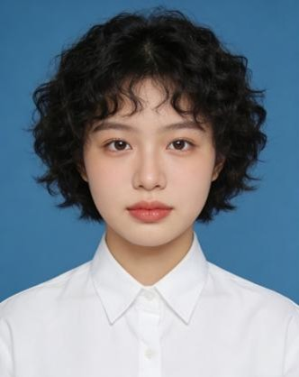
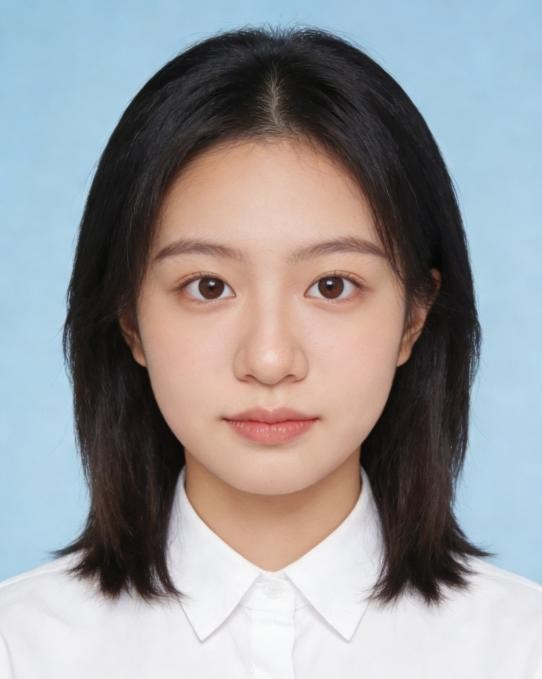
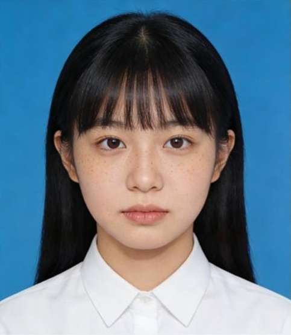

|
 |
董亚琴｜洋栖中学1999届 个人档案
姓名：董亚琴性别：女 出生：1981年9月15日 毕业：洋栖中学1999届高三（2）班 籍贯：湘水市临水区 血型：A型 身高：162cm 成绩：理科偏弱、文科较好，作文常被当作范文 在校身份：普通学生，未担任班干部，不参加社团 家庭：父母外出打工，家中只有奶奶瘫痪在床 备注： |
|
袁薇｜洋栖中学2000届 个人档案
姓名：袁薇性别：女 出生：1982年11月3日 毕业：洋栖中学2000届高三（1）班 籍贯：湘水市洋芳区 血型：O型 身高：158cm 成绩：理科稳定，文科一般 在校身份：普通学生，偶尔帮老师整理资料，不参与任何活动 家庭：无法正常联系家人 备注： |
|
 |
崔静｜洋栖中学2004届 个人档案
姓名：崔静性别：女 出生：1987年5月16日 毕业：洋栖中学2004届高三（2）班 籍贯：湘水市文科区 血型：A型 身高：160cm 成绩：偏文科，作文与英语突出 在校身份：语文课代表，偶尔协助班主任整理学生档案与评分表 家庭：被任家庭收养，亲生父母不详，家中只有爷爷奶奶，爷爷奶奶均务农。 备注： |
|
任佳｜洋栖中学2004届 个人档案
姓名：任佳性别：女 出生：1986年2月9日 毕业：洋栖中学2004届高三（2）班 籍贯：湘水市临水区 血型：B型 身高：163cm 成绩：中等，偏科明显，理科较弱 在校身份：普通学生，班级活跃分子，消息灵通 家庭：家庭贫困，家中父母下岗。 备注： |
|
 |
欧燕｜洋栖中学2007届 个人档案
姓名：欧燕性别：女 出生：1989年4月21日 毕业：洋栖中学2007届高三（1）班 籍贯：湘水市临水区 血型：AB型 身高：159cm 成绩：中上水平，理科稳定，文科一般。 在校身份：普通学生，无班干部职务，不参加社团活动，独来独往 家庭：家境普通，父母在外务工，常年住校，很少回家。 备注： |